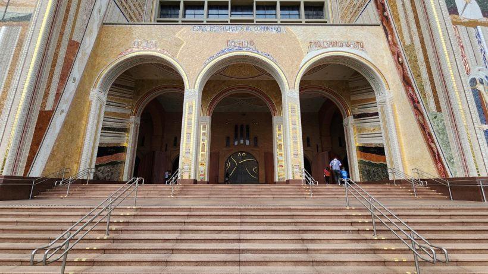
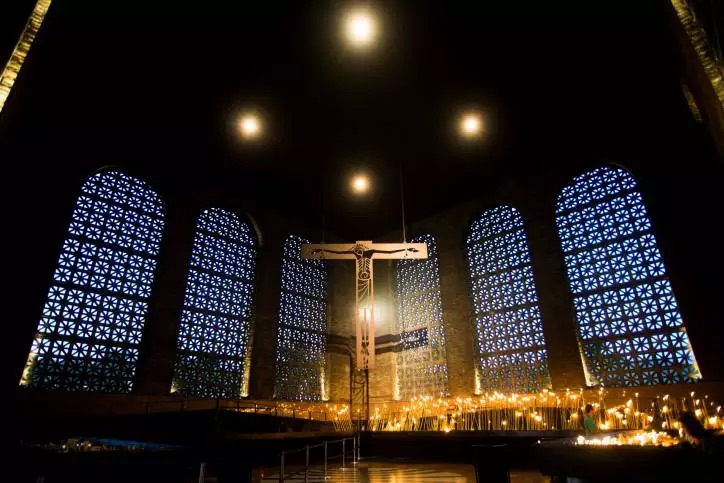
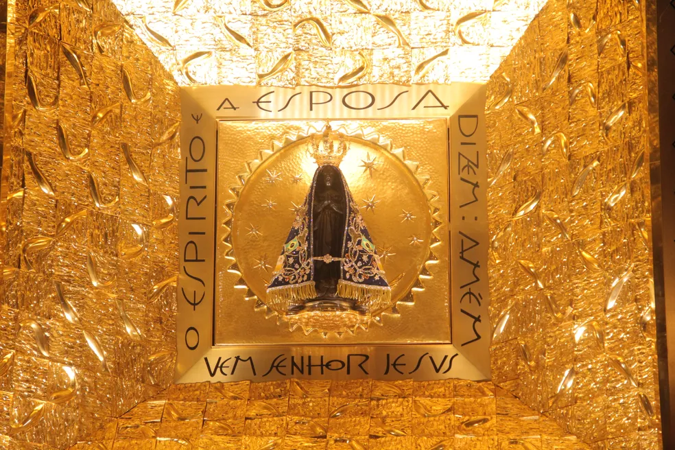
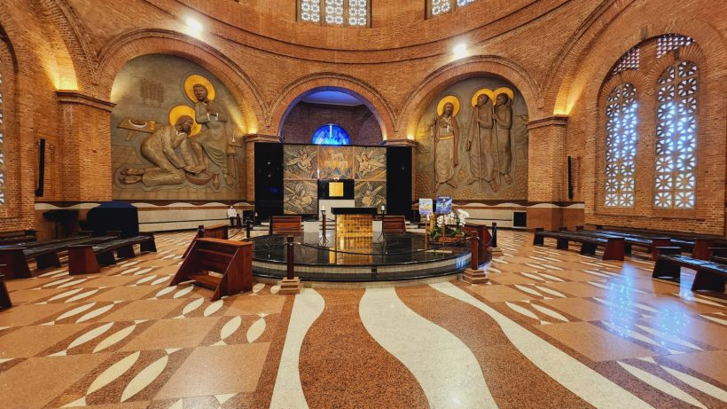
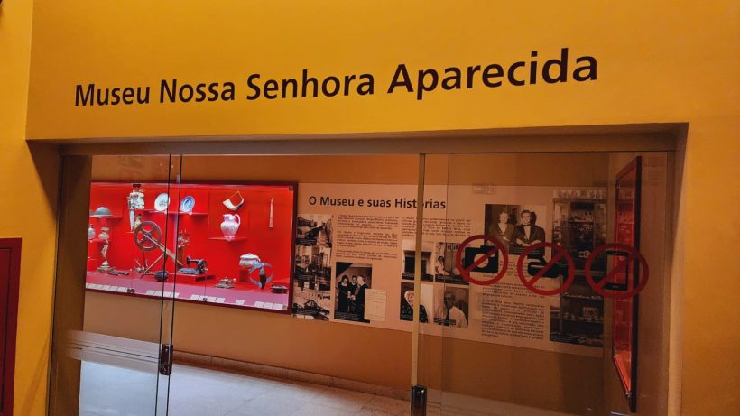
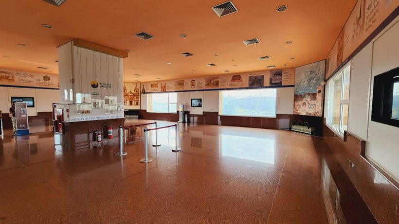
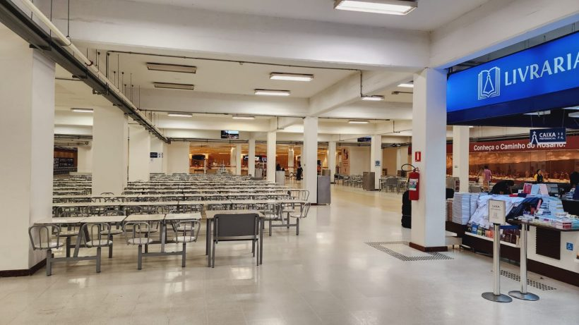
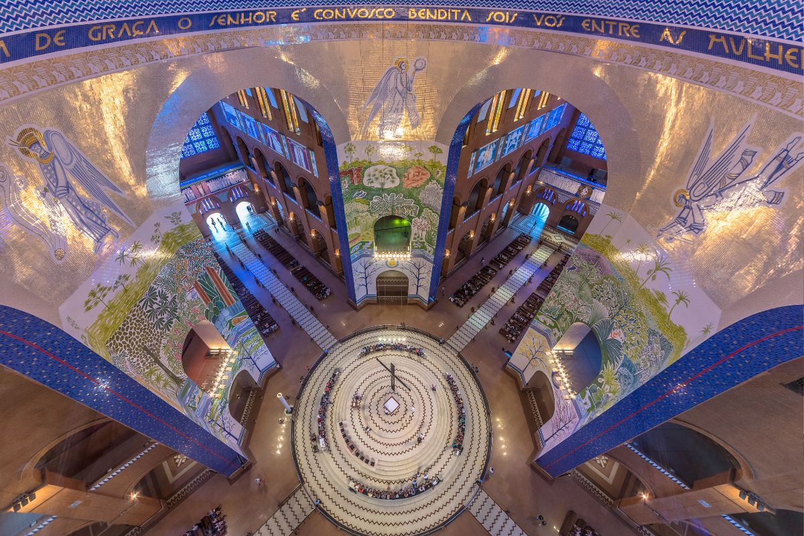
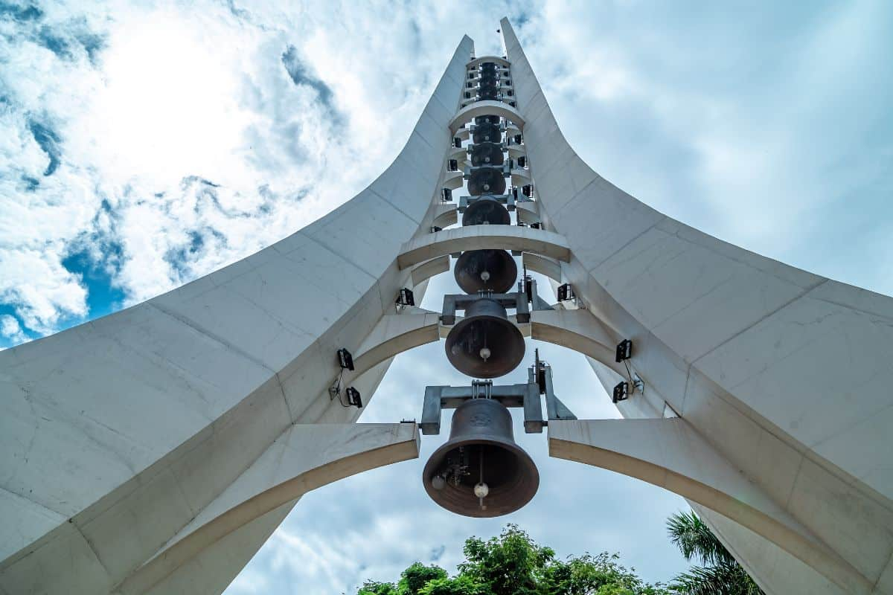

Escadaria de Entrada e porta do Santuário. 1

Capela de Velas do santuário. 2

Nossa Senhora Aparecida achada no rio em 1717. 3

Capela do Santíssimo. 4

Museu de Nossa Senhora Aparecida. 6

Mirante Torre Brasilia. 7

Refeitório 'Casa do Pão' e Livraria. 8
 Sala dos Sinos. 9
Sala dos Sinos. 9

Imagem da sala de Celebração de Missas do Santuario. 10

Sinos do Campanário. 11